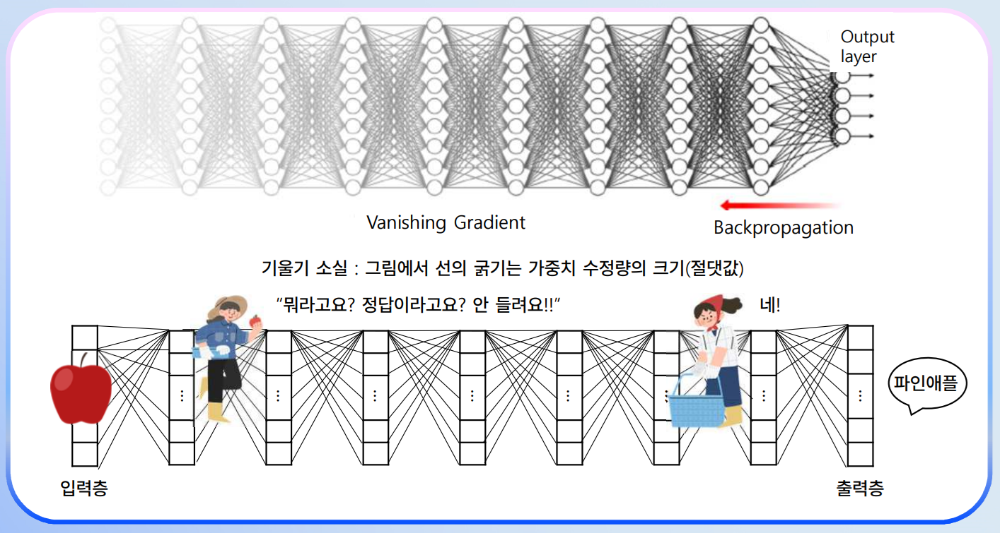
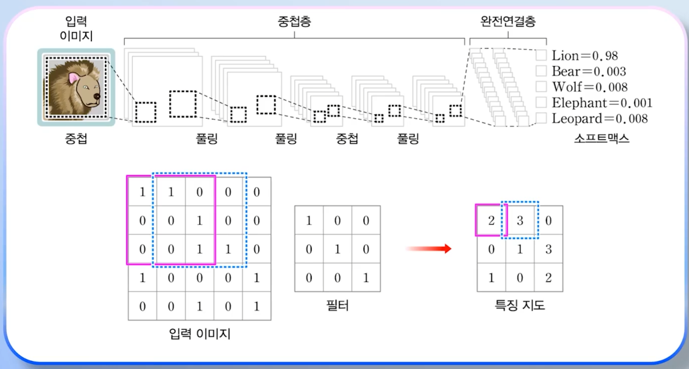
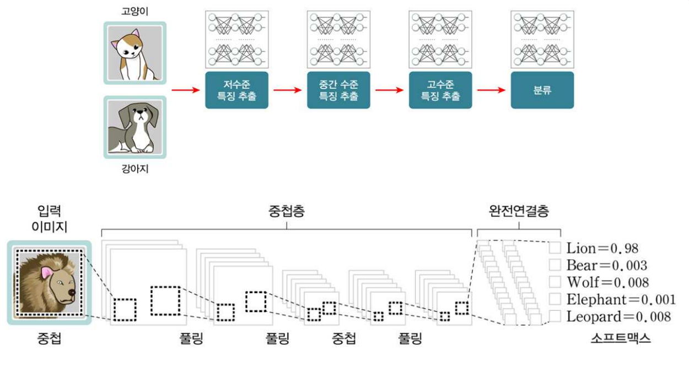
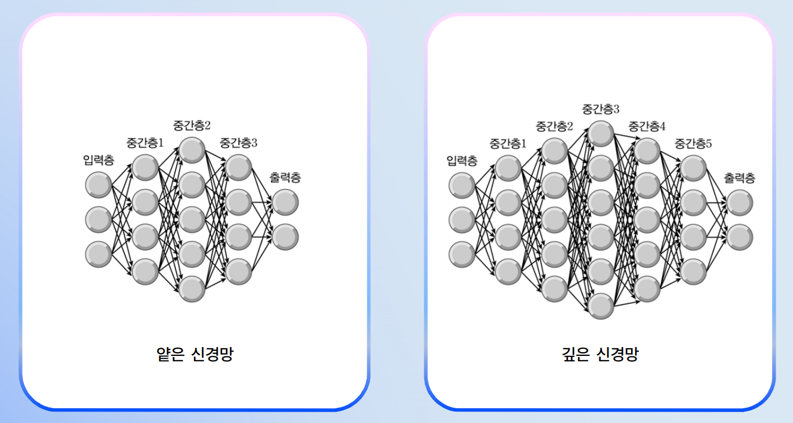

순환신경망(RNN, Recurrent Neural Network) — 출력이 되먹임되는 구조
생성 AI(GPT 등)·이미지 캡셔닝·스타일 전송 등 딥러닝 응용 사례를 안다.
2024년 노벨상 수상자(힌튼·호필드·하사비스)의 기여를 안다.
1차시신경망 응용 — 모델링과 일반화
신경망 응용 = "관계를 찾는 모델링". 학습된 신경망은 학습하지 않은 입력도 일반화로 처리한다.
신경망 응용이란
정의 — 모델링 (Modeling)
입력에서 출력으로의 관계를 찾는 일. 함수를 정의하는 작업으로 볼 수 있다. 강의의 비유 — "함수 = 공장(Factory)" : 재료(입력)를 넣으면 결과(출력)를 만들어 던져준다.
두 가지 접근법:
접근법
특징
예시
기호주의(Symbolism)
명시적 규칙으로 관계 표현
전문가 시스템, IF-THEN 규칙
연결주의(Connectionism)
신경망이 데이터로부터 관계 학습
딥러닝, GPT
모든 관계를 명시적 규칙으로 쓸 수 있는 것은 아닙니다. 예: 이미지에서 고양이를 인식하는 규칙을 IF-THEN으로 쓰기 어렵다. 신경망은 이런 관계를 학습으로 찾아낸다.
블랙박스(Black Box) 문제
신경망은 관계를 잘 찾지만 설명을 잘 못한다. 4주차에서 배운 전문가 시스템의 설명 기능과 대조적. 강의 비유: "휴대폰을 쓰면서도 내부가 어떻게 작동하는지 모르듯, GPT도 블랙박스지만 잘 작동한다".
"인공지능이 그러라고 했기 때문에 — 이건 위험한 생각. 오히려 인공지능 결과를 더 의심해야 한다."
— 강태원 교수
일반화 능력(Generalization)
일반화 (Generalization)
학습되지 않은 새로운 입력에 대해서도 신경망이 적절한 출력을 내는 능력. 좋은 학습 = 좋은 일반화.
예: 손글씨 숫자(MNIST 비슷) 학습 후, 학습한 적 없는 사람의 글씨도 인식. 단, 학습 데이터에 오류가 있으면 그 오류를 학습해 일반화 성능이 떨어진다.
6주차와의 연결
6주차의 과적합(Overfitting) = 일반화 실패. 일반화 잘 되는 모델이 좋은 모델이며, 정규화·드롭아웃 등이 일반화를 돕는다.
2차시깊은 관계 — 딥러닝과 CNN/RNN
중간층이 4개 이상인 신경망 = 딥뉴럴 네트워크(DNN). 깊으면 학습이 어려워지는 기울기 소실 문제를 ReLU·드롭아웃 등으로 해결한 것이 딥러닝.
딥뉴럴 네트워크(DNN)와 딥러닝
정의딥뉴럴 네트워크(Deep Neural Network, DNN) = 중간층(은닉층)이 4개 이상인 깊은 신경망. "심층 신경망"이라고도 함.
딥러닝(Deep Learning) = DNN을 효과적으로 학습시키기 위한 기술과 기법들의 총칭.
기울기 소실 (Vanishing Gradient) 문제

기울기 소실(Vanishing Gradient) — 입력층 쪽으로 갈수록 수정량이 작아짐
기울기 소실
역전파(Backpropagation)에서 출력층의 오차가 입력층 방향으로 거꾸로 전파될 때, 층이 깊을수록 기울기가 0에 가까워져 가중치 수정이 거의 일어나지 않는 현상.
강의 비유: 거리에서 멀리 떨어진 사람에게 "파인애플과 사과 중 뭐?"라고 외치면, 뒤에 있는 사람은 무슨 말인지 안 들리듯, 깊은 층의 가중치는 학습되지 않는다.
주된 원인은 시그모이드(Sigmoid) 활성함수. 시그모이드는 큰 입력값에서 기울기가 매우 작아진다(포화).
해결책 1 — ReLU 활성함수
ReLU (Rectified Linear Unit)
f(x) = max(0, x). 0 이하는 0, 양수는 그대로. 양수 영역에서 기울기가 1로 일정해 기울기 소실 문제를 크게 완화한다. 딥러닝 시대의 표준 활성함수.
해결책 2 — 드롭아웃 (Dropout)
드롭아웃 (Dropout) — 힌튼 제안
학습 중 뉴런들을 무작위로 비활성화(0으로 만들기)하는 정규화 기법. 신경망이 특정 경로에만 의존하지 않고 더 견고하게 학습하게 만들어 과적합을 방지한다.
시험 포인트 · 빈출
딥러닝 핵심 기술 — ReLU(기울기 소실 해결) + 드롭아웃(과적합 방지). 둘 다 힌튼과 그 제자들의 기여.
합성곱 신경망 (CNN, Convolutional Neural Network)

합성곱(Convolution)과 풀링(Max Pooling) 연산 도식

중첩신경망(CNN) — Conv → Pool → FC 흐름의 이미지 분류 모델
CNN
영상(이미지) 처리에 특화된 신경망 구조. 1989년에 등장(Yann LeCun). 알파고에도 사용됨.
핵심 연산:
합성곱 (Convolution): 작은 필터(Filter, Kernel, Mask)를 이미지 위에 슬라이딩하면서 특징 추출
특징지도 (Feature Map): 합성곱 결과로 나온 2D 배열
풀링 (Pooling): 특징지도 크기 줄이기 (Max Pooling, Average Pooling)
마지막에 완전 연결층(Fully Connected Layer)으로 분류
계층적 특징 추출: 저수준(선·곡선) → 중간수준(부분 모양) → 고수준(객체 전체). 이는 사람 시각 시스템의 작동 원리와 닮았다.

딥뉴럴 네트워크(DNN, Deep Neural Network) 구조 — 중간층이 깊은 신경망
🎯 강의 끝 퀴즈 (시험 1순위)
강의 영상 마지막에 등장하는 빈칸 채우기 — 핑크 단어가 정답입니다.
1차시
데이터를 입력받아 처리하는 정보처리 시스템은 보통 ( 블랙박스 )로 생각할 수 있다. 사용자로서는 안에서 무슨 일이 일어나는지 관심 없고 단지 원하는 결과가 출력되면 그만이다. 반면에 시스템을 개발하는 사람은 그 내부를 직접 만들어야 한다. 신경망이 좋은 점은 그 내부를, 학습 데이터만 주면, 스스로 배운다는 것이다.
2차시
보통 중간층이 4개 이상인 신경망을 딥 뉴럴네트워크 혹은 깊은 혹은 ( 심층 ) 신경망이라 한다.
3차시
딥러닝으로 이미지를 입력받아 그 내용을 텍스트로 출력하는 작업을 이미지 ( 캡셔닝 )이라고 한다.